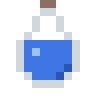
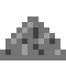

Como instalar
- Baixe o instalador no botão verde. Se o navegador disser que o arquivo "não é baixado com frequência", escolha Manter.
- Abra o arquivo baixado. Se aparecer "O Windows protegeu o computador", clique em Mais informações e depois em Executar assim mesmo.
- Escolha se quer um atalho na área de trabalho, se ele abre junto com o Windows e se ele avisa quando sair versão nova, e clique em Instalar. Não precisa ser administrador.
- Pronto! Ele aparece em cima da barra de tarefas. Passe o mouse nele pra ver do que ele precisa.
Por que esses avisos? O Windows desconfia de programas que ainda são pouco baixados e não têm assinatura digital, que é paga. É comum em projetos pequenos e gratuitos. O código é aberto e pode ser conferido no GitHub.
O que ele faz
Precisa de você
Fome, sede, energia, sono e diversão. Dê comida, água, carinho e um tempo pra brincar.
Cresce com você
Ganha XP, sobe de nível, traz presentes e desbloqueia comidas, poções e atividades.
Guarda-roupa
Chapéus, cores, rastros e até o creeper carregado, com raio e tudo.
Brincadeiras
Vem quando é chamado, busca a bolinha, brinca de esconde-esconde e sobe nas suas janelas.

Cuida de você
Lembra você de beber água, fazer pausas e ir dormir.

Não cutuque demais
Ele chia... e explode. Depois volta emburrado, mas sem perder nada.
Versões novas
Quando sai uma versão nova, o creeper avisa e se atualiza com um clique. O nome, o nível, os itens e tudo o que ele ganhou continuam do jeitinho que estavam.
Dúvidas
Como desinstalar?
Configurações do Windows → Aplicativos → Aplicativos instalados → Creeper Companion → Desinstalar. Ele pergunta se você quer apagar também o creeper salvo.
Dá pra usar sem instalar?
Dá: baixe o CreeperCompanion.exe na
página da versão e abra direto.
Ele também se atualiza sozinho, só não cria atalhos.
Ele usa a internet?
Só se você deixar. Na instalação (ou, sem instalador, na primeira vez que ele abre) ele pergunta se pode avisar quando sair versão nova. Se você deixar, ele pergunta ao GitHub qual é a versão mais nova uma vez a cada 6 horas e só baixa quando você mandar. Fora isso, nada sai do seu computador. Dá pra mudar a qualquer hora em Configurações. Detalhes na política de privacidade.
E no Linux? E no Mac?
No Linux ele roda pelo código: veja as instruções no README. No Mac ainda não funciona.